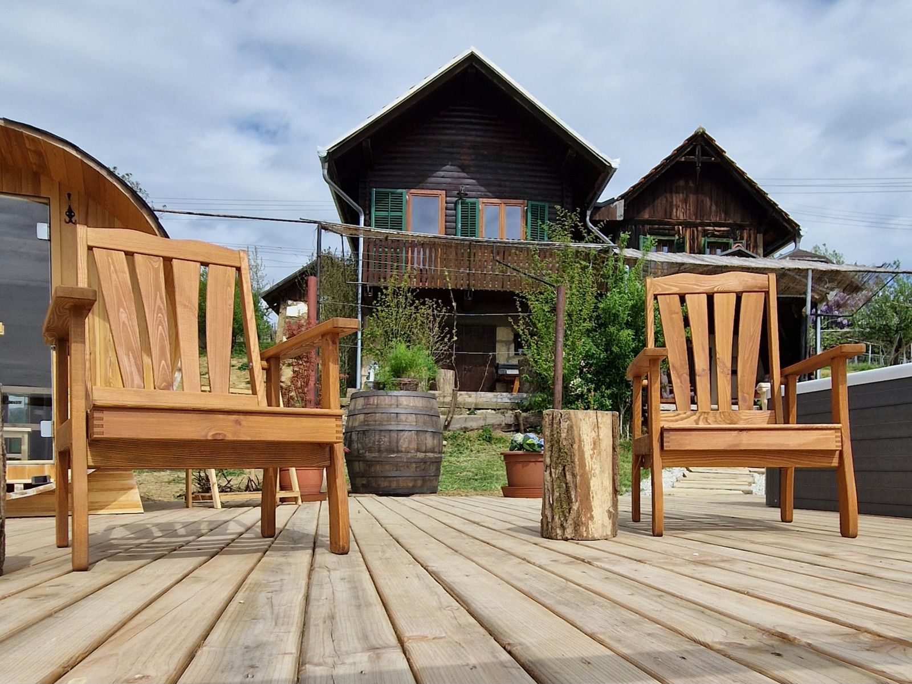
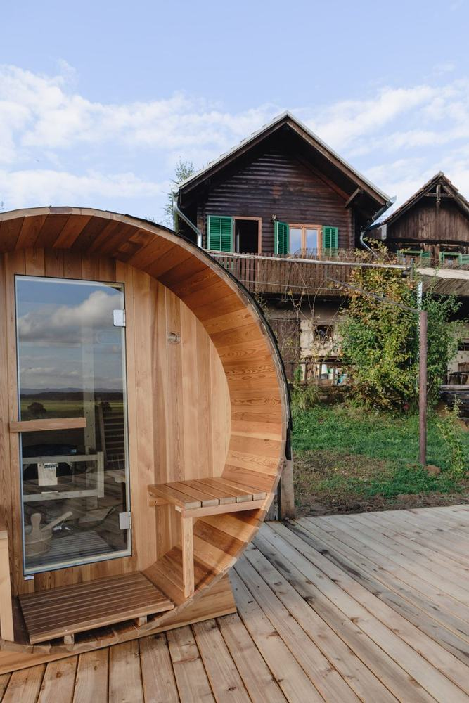
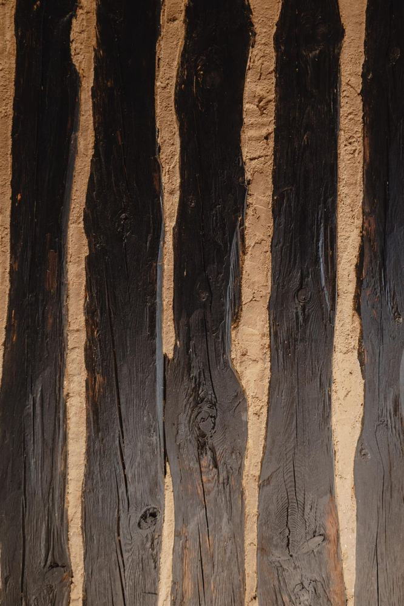
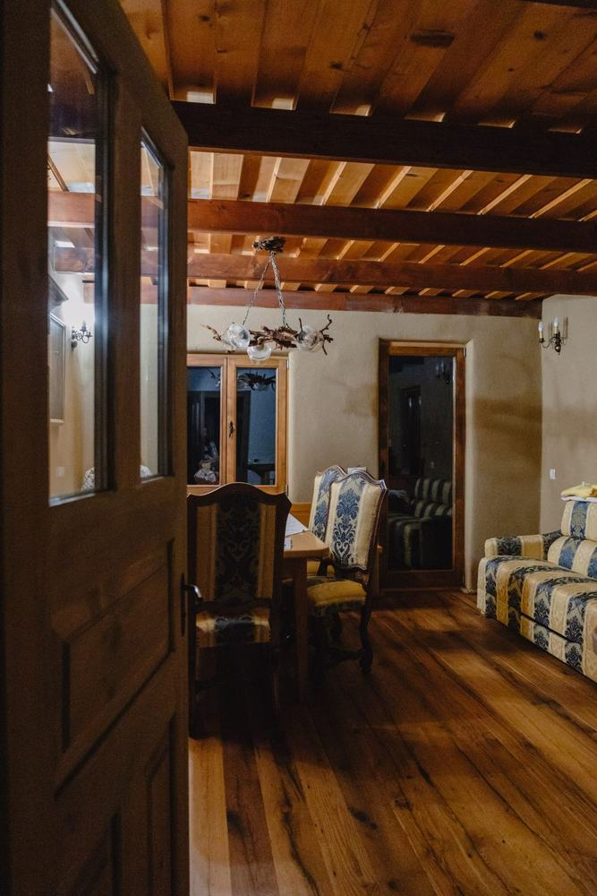
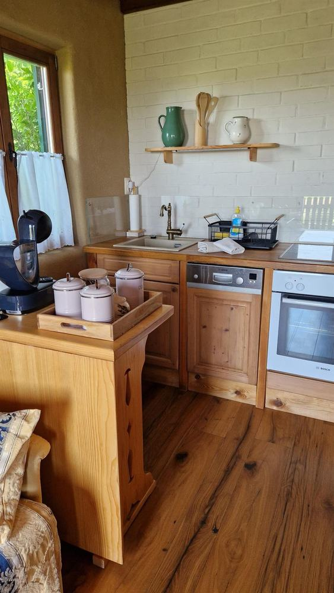
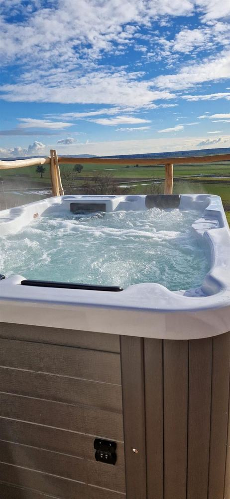
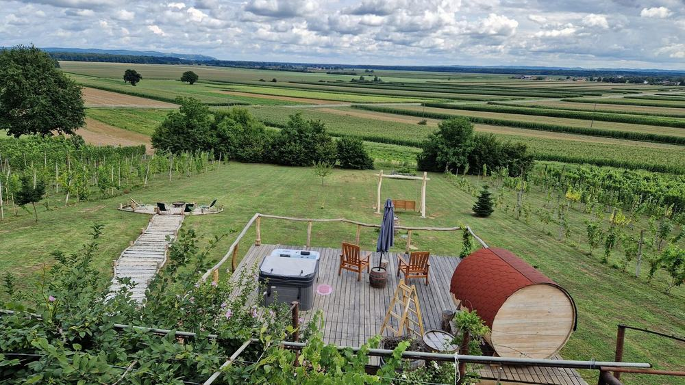

Rajska vrata d.o.o.
Počitniška hiška Clavis
Stara več kot 100 let, med vinogradi s širokim razgledom na Panonsko nižino.
- 1hiša
- 4osebe
- 24 urwellness
- 365dni
Dobrodošli
Dobrodošli v hiški Clavis
Hiška Clavis se nahaja med vinogradi s širokim razgledom na Panonsko nižino. Podjetje Rajska vrata d.o.o. gostom želi omogočiti počitek in mir, zato smo pri obnovi uporabljali naravne materiale, postavili finsko savno in vročo kopel na travniku, od koder pogled sega daleč po prekmurski ravnici.
Radi se pošalimo, da gostje lahko sedijo na obali nekdanjega Panonskega morja.


Avtentičnost nastanitve
Avtentičnost nastanitve
Posebnost hiške Clavis je v avtentičnosti, ki zrcali preteklost prekmurske pokrajine.
Nahaja se med vinogradi s širokim razgledom na Panonsko nižino. Hiška je obnovljena, vendar je ohranjena prvotna lesena konstrukcija sten in stropov. Notranje stene so dobile izolacijo iz trstike, za omet pa se je uporabila glina pomešana s slamo. Hrastovi stari podi, lesena okna in vrata, kakor tudi oprema iz polnega lesa, vam bodo pričarala občutek naravnosti in brezčasja.
Nastanitev
Bivanje v hiški
Postelje so iz akacijevih hlodov, kavč v dnevni sobi in stoli za veliko masivno mizo so obnovljeni, luči so stilske. Kuhinja je sodobno opremljena, na voljo pa sta balkon in terasa.



Wellness
Finska savna in vroča kopel na travniku
Finska savna je gostom na voljo 24 ur na dan, prav tako peneča vroča kopel (predvidena za največ tri osebe). Pogled s travnika sega daleč po prekmurski ravnici.
Na voljo je tudi vinska klet.


Okolica
Prekmurje na dosegu roke
Dobrovnik leži na severovzhodu Slovenije, le 5 km od madžarske meje, 17 km od hrvaške in 30 km od avstrijske. Nahajamo se na tradicionalno vinorodnem območju, zato smo vzpostavili stike z lokalnimi vinarji in ponudniki lokalnih dobrot.
O podjetju
Rajska vrata d.o.o.
Podjetje je bilo ustanovljeno leta 2021 z namenom opravljanja turistične dejavnosti ter prodaje in obnove stilskega pohištva. Počitniška hiška Clavis je prva turistična destinacija, ki smo jo pripravili za razvajanje gostov.
Moto našega podjetja je, da vam omogočamo in v roke dajemo ključ (lat. Clavis), sami pa poskrbite, da boste si odprli vrata v vaš raj.